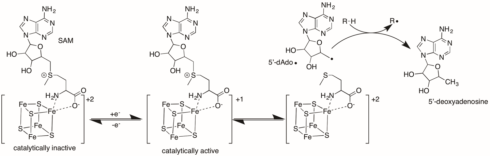
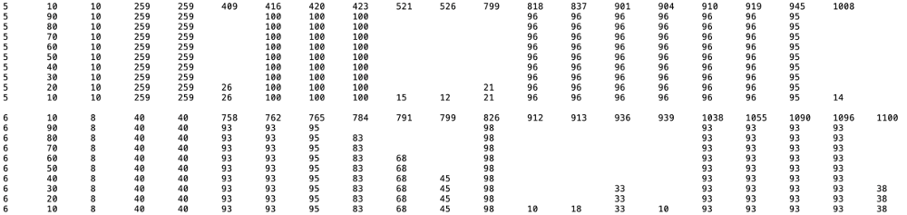

Exploring the Radical SAM Enzyme Superfamily
RadicalSAM.org enables the use of the EFI's genomic enzymology web tools for studies of the radical SAM superfamily (RSS) by providing:
-
UniProt accession IDs for the members of the 20
functionally characterized subgroups curated by the
Structure-Function Linkage Database (SFLD) as well as
subgroups without characterized functions. The IDs are
updated with each release of the UniProt and InterPro
databases (every 8 weeks).
The IDs can be used as the input for Option D of EFI-EST to generate sequence similarity networks (SSNs). The SSNs are used for exploring sequence-function space and, also as input, to discover genome context using EFI-GNT and human microbiome metagenome abundance using EFI-CGFP. In contrast to the SSN for the entire, extremely large RSS, the SSNs for the smaller subgroups can be analyzed with Cytoscape using most laptop/desktop computers. - Multiple sequence alignments (MSAs), WebLogos, hidden Markov models (HMMs), length histograms, phylogenetic distribution, and conservation of user-defined residues for the subgroups to aid inference of reactions and mechanisms.
- Community-provided lists of experimentally characterized functions to supplement the annotations curated by SwissProt.
- Community-updated lists of publications.
Radical SAM superfamily (RSS) and its subgroups
The RSS is arguably the largest and most functionally diverse enzyme superfamily. As of February 2020, the RSS included 571,785 sequences (InterPro families IPR007197 and IPR006638 from Release 78 of the InterPro database/Release 2020_01 of the UniProt database).
The members of the radical SAM superfamily contain a Fe4S4 cluster near the N-terminus of a (β/α)6-barrel domain that binds S-adenosyl methionine (SAM); one-electron reduction of the bound SAM yields a 5′-deoxyadenosyl radical (5′-dAdo•) and Met. The 5′-dAdo• generates a substrate radical (R•) (and 5′-deoxyadenosine) that undergoes intriguing and often complex chemistry to yield the product.

The SFLD (http://sfld.rbvi.ucsf.edu/archive/django/index.html) used an SSN to segregate the RSS into 20 subgroups with characterized functions and 22 without characterized functions. Their analysis was described in Methods in Enzymology Volume 606 in 2018: Atlas of the Radical SAM Superfamily: Divergent Evolution of Function Using an "Plug and Play" Domain, G.L. Holliday, E. Akiva, E.C. Meng, S.D. Brown, S. Calhoun, U. Pieper, A. Sali, S.J. Booker and P.C. Babbitt (doi: 10.1016/bs.mie.2018.06.004).
At the time of their analyses (2017), the RSS included 113,776 sequences that were collected at 50% sequence identity into 10,741 representative nodes so that the SSN could be visualized and analyzed using Cytoscape (https://cytoscape.org/). The SSN is reproduced below (Figure 5 in the Atlas; minimum e-value threshold to draw edges between nodes is 20), with the characterized subgroups numbered and colored as described by the SFLD.

We provide a web resource with three "democratized" genomic enzymology tools (https://efi.igb.illinois.edu/; doi: 10.1021/acs.biochem.9b00735) The tools are used to 1) explore sequence-function space in protein families using SSNs (generated with EFI-EST), 2) explore genome neighborhoods for clues about functions of uncharacterized enzymes (collected with EFI-GNT), and 3) prioritize uncharacterized SSN clusters for functional assignment based on human microbiome metagenome abundance (chemically guided functional profiling with EFI-CGFP).
However, experimentalists interested in the RSS cannot take full advantage of the tools. First, the SSN for the RSS is too large to be visualized/analyzed with Cytoscape using computers that are typically available (too many nodes and edges). Also, regularly updated lists of the members of the subgroups are not available for SSN generation because 1) the SFLD now is an archive and 2) many of the InterPro families for the subgroups are incomplete .
Therefore, we developed RadicalSAM.org to provide regularly updated lists of accession IDs for the subgroups so that their SSNs can generated with EFI-EST and analyzed with Cytoscape. The SSNs can used as input for the EFI-GNT and EFI-CGFP tools. In almost all cases (except SFLD subgroup 5, B12-binding domain and SFLD subgroup 17, SPASM/Twitch domain; vide infra), the number of UniRef50 IDs in a subgroup is sufficiently small that the SSNs can be visualized with Cytoscape using typically available computers. RadicalSAM.org also provides descriptive information for the subgroups to aid target selection and inference of function, e.g., multiple sequence alignments (MSAs), WebLogos, length histograms, and phylogeny.
Identification of RSS subgroups
The size of the RSS requires a large-scale strategy for identifying subgroups with related functions, e.g., the segregation of the SSN as described in this section. Given the large numbers of both starting sequences and clusters that are identified, we cannot guarantee that the segregation is "perfect". Indeed, we expect that it is not. However, the identified clusters provide manageable starting points for the discovery of novel functions using EFI-EST, EFI-GNT, and EFI-CGFP.
Following the strategy used by the SFLD, we segregated the SSN for the RSS into clusters, some SFLD-curated subgroups and others containing uncharacterized sequences.
We generated the reference SSN for RadicalSAM.org using the 44,060 UniRef50 IDs with UniProt-defined "complete" sequences in families IPR007197 and IP006638 as defined by InterPro 78 (based on UniProt 2020_01). These UniRef50 clusters contain 544,274 UniProt IDs.
[According to UniProt, a "complete" sequence is encoded by a genomic sequence with both a start and stop codon; "fragments" are encoded by a genomic sequence missing one or both. However, the "complete" sequences are not necessarily "full-length" functional proteins: e.g., sequencing errors produce incorrect start/stop codons; also, a coding sequence at the end of a sequencing read may not include a start or stop codon. Many "incomplete" proteins can be removed from an SSN using a minimum length filter, although "incomplete" proteins that exceed the minimum length filter will not be removed. The "incomplete" proteins can influence the quality of a multiple sequence alignment, reducing the apparent percent conservation of conserved residues and the utility of the hidden Markov model (HMM) generated from the MSA.]
The SSN shown below was generated using a minimum edge alignment score of 11 to connect nodes; it contains 44,060 nodes and 36,371,317 edges. The SSN was analyzed with a Mac Pro with 768GB RAM (significantly more RAM than available on typical computers).
The large cluster (43,928 nodes) was selected for identification of the subgroups.
The nodes associated with SFLD subgroups were identified using the InterPro assignment that includes the SFLD subgroup (Table 1); the node colors are those used by the SFLD.
| Subgroup | Subgroup Name | IPR # |
|---|---|---|
| 1 | 7-carboxy-7-deazaguanine synthase-like | IPR024924 |
| 2 | Oxygen-independent coproporphyrinogen III oxidase-like | IPR034505 |
| 3 | Antiviral proteins (viperin) | none |
| 4 | Avilamycin synthase | IPR033971 |
| 5 | B12-binding domain containing | IPR006158 |
| 6 | BATS domain containing | IPR010722 |
| 7 | DesII-like | IPR016863 |
| 8 | ELP3/YhcC | IPR039661 |
| 9 | F420, menaquinone cofactor biosynthesis protein | IPR034405 |
| 10 | FeMo-cofactor biosynthesis protein | IPR036105 |
| 11 | Lipoyl synthase like | IPR003698 |
| 12 | Methylthiotransferase | IPR013848 |
| 13 | Methyltransferase Class A | IPR040072 |
| 14 | Methyltransferase Class D | IPR034474 |
| 15 | Organic radical activating enzymes | IPR012839 |
| 16 | PLP-dependent/Lys aminomutase/Glu aminomutase | IPR003739 |
| 17 | SPASM/twitch domain containing | IPR023885 |
| 18 | Spectinomymycin biosynthesis | IPR034508 |
| 19 | Spore photoproduct lyase | IPR023897 |
| 20 | tRNA wybutosine-synthesizing | IPR034556 |
In contrast to the SFLD's SSN (vide supra), the clusters containing the subgroups are not separated in this SSN (a single cluster!), the result of both the larger number of nodes and the choice of a smaller alignment score to both prevent splitting SFLD subgroups into multiple clusters and, also, reduce the number of singletons.
The clusters containing the SFLD subgroups were separated by manual deletion of "long" SSN edges ("remote" sequence relationships). This editing is subjective, but we know of no other practical strategy to separate the subgroups. That 1) the nodes associated with the various subgroups colocalize in the starting SSN and 2) their colocalization is maintained in the editing supports the validity of this approach.
In several of the SFLD subgroups, some nodes are grey because they are not recognized by the HMMs used by the InterPro databases to identify family members (many of the HMMs were generated when the RSS was significantly smaller/less diverse).
Also, the nodes associated with subgroup 5, B12-binding domain (blue nodes), and subgroup 17, SPASM/Twitch-domain (magenta magenta), are not colocalized in a single discrete cluster because the sequence-function space is more diverse than that for the other subgroups.
The resulting SSN contained 15 clusters, including five "megaclusters" containing multiple SFLD subgroups [(mega)clusters are numbered in order of decreasing number of UniRef50 IDs/nodes].
Megaclusters -2, -3, -4, and -6 were segregated into component clusters/subgroups using SSNs generated with larger minimum alignment score thresholds to draw edges and manual removal of "long" edges.
The SSN for megacluster-2 was generated with an alignment score of 15 (increase from the initial alignment score of 11); the "long" edges were deleted to segregate the clusters/subgroups.

{kind=link}
{kind=link}
{kind=link}
{kind=link}
{kind=link}
Megacluster-3 was segregated using an alignment score of 16.
{kind=link}
{kind=link}
{kind=link}
Megacluster-4 was segregated using an alignment score of 20.
{kind=link}
{kind=link}
{kind=link}
Megacluster-6 was segregated using the original alignment score of 11.
{kind=link}
{kind=link}
The remaining clusters were used without further editing (clusters 5 and 7-15).
{kind=link}
Where indicated on the Explore pages for megaclusters-2, -3, and -4, several of their clusters were further segregated into subclusters so that different SwissProt functions and/or distinct Cys motifs are located in distinct subclusters.
The Explore page provides a portal to these clusters and subgroups. When multiple (mega)clusters are present in the figure at the top of each page, hovering over and clicking on the cluster will open the page for the cluster.
The page for each cluster/subgroup (both characterized and uncharacterized functions) provides several types of descriptive information that can be viewed and downloaded: clusters sizes (numbers of UniProt, UniRef90, and UniRef50 IDs), length histograms (all UniProt IDs and UniRef50 IDs used to construct the MSAs and HMMs), WebLogo and multiple sequence alignment (MSA; can be viewed with Jalview that is available for download from https://www.jalview.org/), HMM (can be viewed interactively using Skylign at https://skylign.org/), SwissProt functions, KEGG-annotated sequence IDs, PDB structures, TIGRFAM families, taxonomy, and community annotations not included in SwissProt.
The Taxonomy button opens a sunburst display similar to that provided by Pfam (https://pfam.xfam.org/) for its families. Each node in the SSN is displayed as an arc, arranged radially with the superkingdoms at the center and species in the outermost ring. Clicking on a taxonomic group expands that part of the taxonomic hierarchy. Clicking on the center circle will zoom the display to the next highest level. Buttons are provided to download the IDs (UniProt and UniRefNN) and FASTA files (UniProt and UniRefNN) at the displayed level (depending on the number of sequences, a delay may be encountered in downloading the FASTA files).
The xgmml file for the SSN generated with an alignment score of 11 is available for download. Files with UniProt, UniRef90, and UniRef50 IDs as well as FASTA sequences can be downloaded. The IDs can be used with Option D of EFI-EST to generate SSNs.
The Search page is used to search the clusters for a user-supplied accession ID ("Find by UniProt ID"), a user-supplied sequence ("Find by Sequence"), or a user-supplied organism (genus/species/strain; "Find by Taxonomy").
B12-Binding domain (SFLD subgroup 5) and SPASM/Twitch domain (SFLD subgroup 17)
Sequence-function space in both SFLD subgroup 5, B12-binding domain (blue nodes in the SSN), and SFLD subgroup 17, SPASM/Twitch domain-containing (magenta nodes in the SSN), is too diverse for an automated HMM-based approach for sequence updates (see "Updates" tab). As a result, the sequences in these subgroups are updated manually. The SSN for the RSS is generated for each InterPro release; Subgroup 5 (Megacluster-2-1) and Subgroup 7 (Megacluster-1-1) are identified by manual editing of edges in the SSN for the RSS as described in the Subgroups tab.
Megacluster-1-1, Subgroup 17, SPASM/Twitch domain
The sequences in subgroup-17 (megacluster-1-1) are identified by removing the sequences in subgroup-14 (methyltransferase D, megacluster-1-2), subgroup-10 (FeMo-cofactor megacluster-1-3), subgroup-3 (viperin, megacluster-1-4), and subgroup-7 (DesII-like, megacluster-1-5) from megacluster-1 using the HMMs generated identified using the HMMs generated for the IP78 database. In the UniProt Release 2020_02 and InterPro Release 78 databases, these subgroups were identified using their SwissProt curations in distinct clusters in the SSN of megacluster-1 generated with an alignment score of 40.
The Explore page for megacluster-1-1 displays an image of the SSN generated with an alignment score of 11 followed by links to pages for a series of five Color SSNs (alignment scores 20, 30, 40, 50, and 60). The series of Color SSNs allows the user to peruse clusters as they emerge and, also, determine their intercluster relationships prior to separation (perhaps indicating clusters with similar functions). The figures show the SSN for megacluster-2-1 generated with an alignment score of 15 and the Color SSN generated using an alignment score of 50.
{kind=link}
{kind=link}
Clusters that lack a C-terminal Cys-motif containing domain can be identified in the WebLogos of some of the clusters in the Color SSNs. And, although subgroup 17 has been designed as SPASM/Twitch domain-containing (PF13186 and IPR023885), its clusters contain a wide variety of Cys-rich motifs, ranging in number from 1 to >14 Cys residues (the paradigm SPASM domain contains 7 Cys residues for two Fe4S4 clusters; the paradigm Twitch domain contains 3 Cys for one Fe4S4 cluster1.
For each Color SSN, the WebLogos, MSAs and HMMs were generated for clusters that contain ≥3 UniRef50 IDs.
The Explore page for each Color SSN begins with an image of the SSN followed several tabs:
Data File Download: The xgmml file for the Color SSN is available for download; the user can visualize the SSN with Cytoscape and identify the clusters. The cluster numbers used in the Explore pages and the data downloads are those in the Color SSN that are assigned in order of decreasing number of UniProt IDs in the cluster ("Sequence Count Cluster Number" node attribute).
Downloads are provided for the UniProt, UniRef90, and UniRef50 IDs and the FASTA files for the UniProt, UniRef90, and UniRef50 IDs for the megacluster. A file is also available that lists the SwissProt annotations with their UniProt IDs and clusters.
WebLogos: The number of UniProt, UniRef90, and UniRef50 IDs in each cluster is provided. The WebLogo for each cluster in the SSN is displayed. The conserved Cys residues are colored in red to allow easy identification of the canonical SAM-binding Cx3Cx2C motif as well other conserved Cys residues. Each WebLogo is available as a png file; the MSA used to generate the WebLogo also is available and can be viewed with Jalview (https://www.jalview.org/). The complete sets of WebLogs and MSAs for all of the clusters in the Color SSN also are available.
Consensus Cys Residues: A text file ("Consensus residue percentage summary table") is available. In the MSA for each cluster (cluster number in column 1), the positions of Cys residues identified at 90%, 80%, 70%, 60%, 50%, 40%, 30%, 20%, and 10% conservation (column 2) are identified in columns 6 and greater. The number in column 3 is the number of Cys residues conserved at ≥80%; columns 4 and 5 provide the number of IDs in the cluster . The canonical Cx3Cx2C is easily identified; the additional conserved Cys residues may provide ligands to auxilliary Fe-S centers.

In this example, cluster 5 contains a SPASM domain; cluster 6 contains a Twitch domain. The presence of Cys residues with <80% conservation indicates heterogeneity that can be examined by inspecting the MSA.
HMMs: The HMM for each cluster generated from the MSA using hmmbuild is provided. It can be viewed as an image generated by Skylign (https://skylign.org/). The image can be downloaded as a png file. The text file for the HMM is available for download. The complete sets of HMMs for all clusters in the Color SSN also is available.
Length Histograms: The length histogram for the UniProt IDs in each cluster is displayed; no minimum and maximum length filtering was applied to the sequences. The image can be downloaded as a png file. The complete sets of length histograms for all of the clusters in the Color SSN also is available.
The cluster Explore pages also include downloads for the UniProt, UniRef90, and UniRef50 IDs and the FASTA files for the the UniProt, UniRef90, and UniRef50 IDs. The SwissProt functions, KEGG-annotated sequence IDs, PDB structures, TIGRFAM families, taxonomy, and community annotations not included in SwissProt are also provided.
Megacluster-2-1, Subgroup 5, B12-binding domain
The Explore page for megacluster-2-1 displays an image of the SSN generated with an alignment score of 15 followed by links to pages for a series of five Color SSNs (alignment scores 45, 55, 65, 75, and 85). The series of Color SSNs allows the user to peruse clusters as they emerge and, also, determine their intercluster relationships prior to separation (perhaps indicating clusters with similar functions). The figures show the SSN for megacluster-2-1 generated with an alignment score of 15 and the Color SSN generated using an alignment score of 75.
{kind=link}
{kind=link}
All of the sequences in megacluster-2-1 are designated as belonging to subgroup 5; however, clusters that lack the B12-binding domain (PF02310) can be identified in the WebLogos of some of the clusters in the Color SSNs.
For each Color SSN, the WebLogos, MSAs and HMMs were generated for clusters that contain ≥3 UniRef50 IDs.
The Explore page for each Color SSN begins with an image of the SSN followed by the same tabs and downloads provided for megacluster-1-1.
For both Mega-1-1 and Mega-2-1, the Search functions identify the Color SSN clusters in which user-specified accession IDs ("Find by UniProt ID") or sequences ("Find by Sequence") are located. The clusters are links to pages for the identified clusters with the tabs/files/downloads that are provided on the Explore pages for the parent Color SSNs.
1
doi: 10.1074/jbc.R114.581249
doi: 10.1016/j.bbamcr.2015.01.002
doi: 10.1074/jbc.RA118.005369
Search Functions
The Search page provides the ability to search the RadicalSAM.org clusters for a user-supplied accession ID ("Find by UniProt ID"), a user-supplied sequence ("Find by Sequence"), or a user-supplied organism (genus/species/strain; "Find by Taxonomy").
Find by UniProt ID
For all but megacluster-1-1 (subgroup-17, SPASM/Twitch domain) and megacluster-2-1 (subgroup 5, B12-binding domain), the search identifies the cluster that contains the user-specified accession ID; the cluster is a link to the Explore page that provides information/downloads for the cluster.
For megacluster-1-1 (subgroup-17, SPASM/Twitch domain) and megacluster-2-1 (subgroup 5, B12-binding domain), the search identifies the cluster (if ≥3 nodes/UniRef50 IDs) in each Color SSN that contains the ID; the cluster is a link to an Explore page for the cluster.
The cluster Explore page displays the SSN for the cluster. The WebLogo generated from the MSA for all UniRef50 IDs is displayed; the image of the WebLogo can be downloaded as a png file. The length histograms for to the UniRef50 IDs and UniProt IDs are displayed; their images can be downloaded as png files.
Several downloads are available, including the xgmml file for the SSN, the WebLogo, the MSA (all UniRef50 IDs; fragments and multidomain proteins are not excluded), and the HMM generated from the MSA. The HMM also can be viewed as a Skylign image.
The cluster Explore pages also include downloads for the UniProt, UniRef90, and UniRef50 IDs and the FASTA files for the the UniProt, UniRef90, and UniRef50 IDs. The SwissProt functions, KEGG-annotated sequence IDs, PDB structures, TIGRFAM families, taxonomy, and community annotations not included in SwissProt are also provided.
Links for downloading the Color SSNs are also provided so that the user can locate the ID/cluster in the SSNs.
Find by Sequence
The sequence is used to query the HMMs for the various clusters (using hmmscan) and provides a list of links to the pages to top scoring clusters (E-values for the clusters are provided).
For all but megacluster-1-1 (subgroup-17, SPASM/Twitch domain) and megacluster-2-1 (subgroup 5, B12-binding domain), the clusters that contain the closest HMM matches to the sequence are identified; the clusters are links to the Explore pages that provide the information/downloads for the cluster.
For megacluster-1-1 (subgroup-17, SPASM/Twitch domain) and megacluster-2-1 (subgroup 5, B12-binding domain), the numbers of the clusters (if ≥3 nodes/UniRef50 IDs) in each Color SSN are identified that contain the five most significant HMM matches to the sequence . The clusters are links to Explore pages that provide the same information/downloads provided for the cluster Explore pages described in the Find by UniProt ID section (vide supra).
As the alignment score used to generate the Color SSNs increases, the e-value for the most significant match often decreases significantly as sequence heterogeneity in the cluster is decreased. The WebLogos (and MSAs) provide additional information about sequence heterogeneity.
Find by Taxonomy
The user enters the genus/species/strain for an organism of interest. If only the genus is entered, a pop-up list of matching genus-species-strains is provided for selection of the desired genus/species/strain. If the genus and species are entered, a pop-up list of matching genus-species-strains is provided for selection of the desired genus/species/strain. When the complete taxonomy is selected, clicking "Find Clusters" provides a list of clusters containing proteins from the organism; the cluster is a link to the page for the cluster.
Database Updates
With the exception of subgroup 5, B12-binding domain, and subgroup 17, SPASM/Twitch-domain (vide infra), the sequences in the RadicalSAM.org clusters will be updated with each release of the InterPro and UniProt databases (every 8 weeks) using HMMs that were generated from the UniRef50 IDs in the clusters segregated in the SSN generated using UniProt 2020_02/InterPro 78.
The MSA was generated for each cluster using the node UniRef50 IDs. The sequences were length-filtered to include only full-length single domain proteins (from inspection of the length histogram for the UniProt IDs); both short "incomplete" sequences that result from sequencing errors (vide supra) and multidomain proteins were excluded. The length histograms for all UniProt IDs and the length-filtered UniRef50 IDs used to generate the MSA are provided for each cluster. The MSA was generated using MUSCLE.
The HMM was generated from the MSA using the hmmbuild utility of HMMER3 (http://hmmer.org/).
The HMMs and the hmmsearch utility of HMMER3 are used to identify the UniRef50 IDs for the clusters in each release of the UniProt/InterPro databases. The sensitivity threshold for identifying a match is chosen to minimize false positives.
The UniRef50 IDs are expanded to identify the UniRef90 IDs using the cluster compositions provided by UniProt. The UniRef90 IDs are similarly expanded to identify the UniProt IDs.
N.B.: The sequences identified as members of a cluster may not comprise the "true" number of sequences, i.e., the matches that are identified is determined by sensitivity threshold used with hmmsearch. Therefore, matches may include false positives; also, the UniProt database may include true positives that contain the signature Cx3Cx2C motif but were not selected. False positives can be identified as "outliers" in an SSN generated for the identified sequences.
What are HMMs?
Users of RadicalSAM.org may not be familiar with HMMs.
Briefly, an HMM represents the consensus sequence for a set of homologous proteins; it provides the probability of each amino acid residue and, when appropriate, insertion at each position. As described in the previous section, we generated the HMMs using the hmmbuild utility in HMMER3 from MSAs constructed with the UniRef50 IDs in the clusters.
The HMM is used to identify "hits" in the UniProt database using the hmmsearch utility in HMMER3. The thresholds" for matches were chosen to minimize false positives. In practice, the thresholds were selected to reproduce the UniRef50 IDs in the clusters in the reference SSN for UniProt 2020_02/InterPro 78.
The HMMs can be downloaded either as an image (png file) or a text file HMM that can viewed interactively using Skylign (https://skylign.org/). The image provides a summary of the consensus sequence, with the caveat that the size of the residue symbol represents the probability of occurrence of the residue, not its percent conservation in the MSA. Insertions/deletions are represented a red vertical line in the image. Viewing the HMM with Skylign provides access to the values of the residue and insertion probabilities at each position.
Community Annotation
We would like RadicalSAM.org to be a community resource, with users providing current annotation information that will assist the community with selection of proteins for study and inform the sequence-function space that is used to infer functions.
SwissProt annotations are incomplete and sometimes vague or incorrect; experimentally verified annotations provided by the community are expected to be both more reliable and precise. On the Submit page, we provide a "Community Annotation Submission" form for users to submit experimentally determined functions as well as publications that document/describe these functions. After review, these will be included on the cluster pages using the "Pubs" and "Anno" buttons.